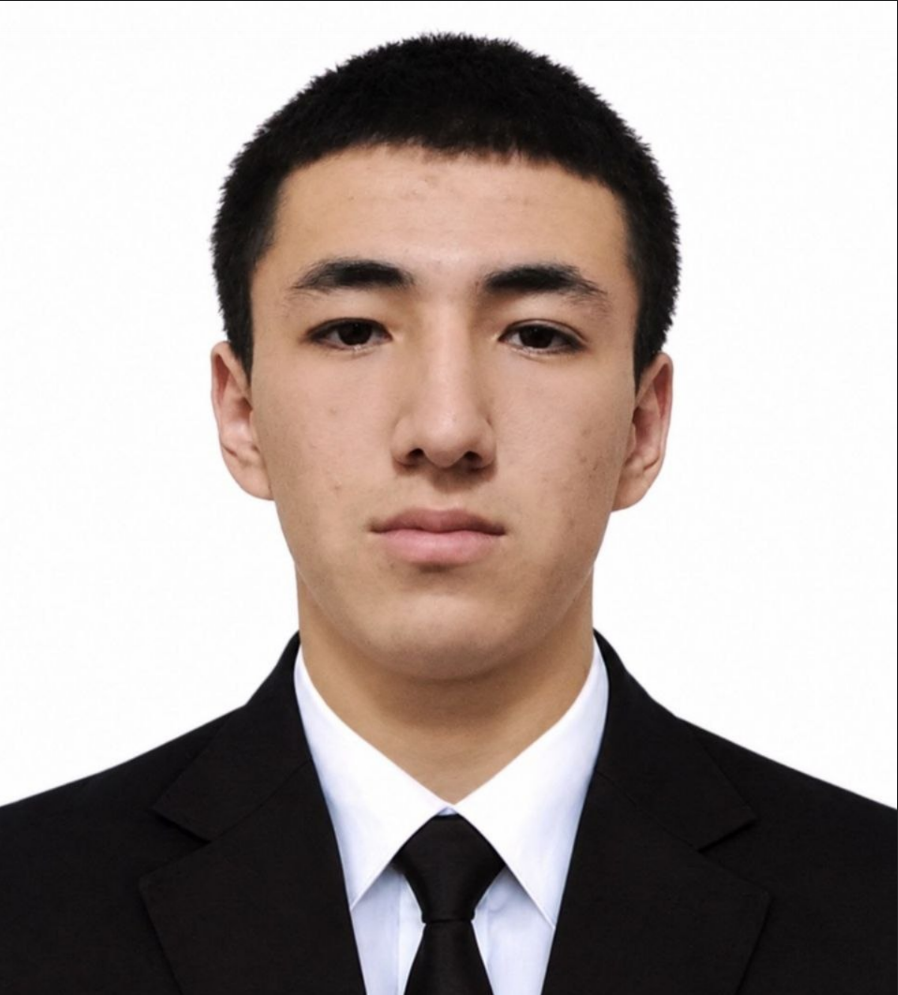

STARTUPER • VOLONTYORLIK • LOYIHA ASOSCHISI • HAKAM
Sirdaryo viloyati Oqoltin tumani 15-maktab 11-"A" sinf o'quvchisi (17 yosh). Sirdaryo volontyorlar raislari a'zosi, ko'plab innovatsion loyihalar asoschisi va tanlovlar hakamlar hay'ati a'zosi.

Yoshlar muammolariga zamonaviy yechim beruvchi ko'plab ijtimoiy va innovatsion loyihalar muallifi hamda tashkilotchisi.
Viloyat miqyosida ko'ngillilar harakatini muvofiqlashtirish, yosh yetakchilarni birlashtirish va xayriya aksiyalarini boshqarish.
Turli startap tanlovlari, intellektual bellashuvlar va yoshlar tashabbuslari loyihalarini baholovchi ekspert-hakam.
Maktab o'quvchilari orasida tadbirkorlik, loyiha boshqaruvi va innovatsion fikrlashni ommalashtirish.
Oqoltin tumani va Sirdaryo viloyati yoshlarini ijtimoiy foydali loyihalar atrofida birlashtirish.
Hakamlar hay'ati a'zosi sifatida eng istiqbolli va kreativ g'oyalarni qo'llab-quvvatlash.
Tuman va viloyat yoshlariga o'z g'oyalarini noldan boshlab tayyor loyihaga aylantirishda mentorlik qilish.
Ko'ngillilar jamoalari o'rtasida tajriba almashinuvi va keng ko'lamli ijtimoiy aksiyalarni yo'lga qo'yish.
Mavjud tashabbuslarni kengaytirib, Sirdaryo yoshlari salohiyatini mamlakat darajasida namoyon etish.